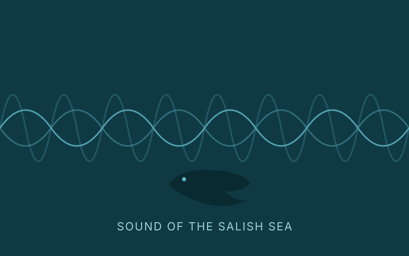
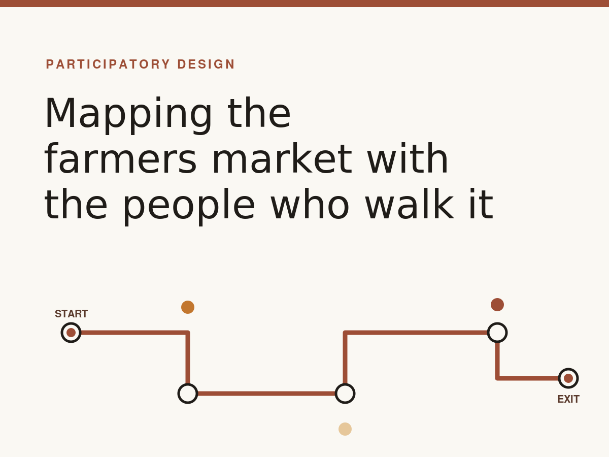
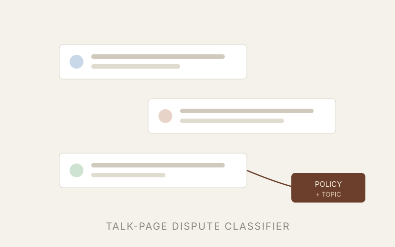

Hi, I'm Jared. I'm a first-year M.S. student in
Human Centered Design and Engineering (HCDE) at the University of Washington,
working as a UX researcher. Before Seattle I studied Sociology and East Asian Studies at the
University of Toronto.
I'm curious about how people make room for new technology in the work and lives they already have.
Lately that's meant talking with professional artists about how they hold onto their creative voice
when generative AI shows up in their process, asking students when they do (and don't) let AI help
write a message to a professor, and watching how frontline public-sector workers fold new tools
into their day. I like getting close to people through interviews and participatory, community-based
methods, and I care a lot about being honest about what a small, situated study can and can't say.
I'm hoping to build a research career, whether in a university or an industry lab. When I'm not
doing research you'll probably find me wandering Seattle's farmers markets, and I have a real soft
spot for projects that hand a method back to the community that can use it. If any of this overlaps
with your work, I'd love to chat.
Ongoing work

Sound of the Salish Sea: bioacoustics exhibit redesign
UX research · field study · community partnership
UX research apprenticeship with Orcasound and The Whale Museum
(Friday Harbor, San Juan Island), redesigning the "Sound of the Salish Sea" exhibit so visitors
can listen to orca sounds and contribute to the protection of the Southern Resident Killer Whales.
I run stakeholder interviews, structured field observation (AEIOU), and in-field visitor
intercepts, and help synthesize discovery findings ahead of an on-site research visit.
Summer 2026 Civic Innovation internship at a municipal utility, looking at how frontline
public-sector workers fold new tools and processes into their professional practice. This work
sits closest to the phenomenon I want to study long term.
Publications & manuscripts
"ChatGPT, Review This Message to My Prof": Investigating Students' Use of AI for Online Communication in Academic Settings
Poster, ACM CSCW 2026
Jared Ren, Soobin Cho
A two-phase interview study of why and how university students use AI to help write online
academic messages, and how they perceive its impact. Across recipients (peers, peer groups,
teaching teams, administrative and project support), relationships (closeness and importance),
and channels (social media, institutional tools, the LMS, and email), we find that AI use is
shaped not by any single factor but by the recipient, the relationship, the channel, and the
message considered together. AI use was highest for institutional and professional recipients
reached over email and the LMS, and lowest for peers reached over social media. We use these
patterns to ask where AI sits within existing models of the communication process.
Students' Use of AI for Academic Online Communication (extended study)
Manuscript in preparation
Jared Ren, Soobin Cho
Negotiating Generative AI: How Professional Visual Artists Maintain Creative Identity, Authorship, and Agency
Qualitative interview study · manuscript in preparation
Jared Ren, Hsiang-Yun Lu, Soeun Park, Manasvi (team study, HCDE 519)
Public discourse tends to sort professional artists into those who fear generative AI and
those who have given in to it. Through interviews with five professional visual artists across
traditional painting, oil painting and performance, commercial VFX, and editorial illustration,
we find that this binary does not hold: across every participant, artistic identity and agency
remained intact, and artists acted as strategic negotiators rather than passive users or pure
refusers. We describe where AI enters each artist's workflow, the phases of work they keep for
themselves (concept, execution, and judgment), and the practices they use to defend those
phases. We close by distinguishing what these practices can protect (authorship) from what
they cannot reach on their own (ownership of work used as training data), and what that implies
for the tools and policies built around creative work.
Projects

Mapping food-access awareness at the U District Farmers Market
participatory design · community-based research
Community-based participatory design with the Neighborhood Farmers Markets.
With a small team I built a playful "map your route" activity and sticker probes to surface how
market-goers move through the market and how aware they are of food-access currency programs
(EBT, SNAP Market Match, Fresh Bucks). The method itself became a finding: a low-burden,
ecologically valid way to capture in-the-moment route and experience data that markets do not
currently have. We are developing it toward a conference poster and a handoff "blueprint" that
market staff can run themselves.
A four-person team usability study for Anchor, a company selling low-piece-count jigsaw puzzles
designed for seniors and people facing cognitive challenges. We ran a cognitive walkthrough, a
Nielsen heuristic review, and moderated end-to-end testing (physical box to website to purchase)
with seven caregiver participants, then handed the sponsor a severity- and criticality-ranked set
of findings and recommendations. Midway we recognized that mood and cognition were out of scope
for usability testing and pivoted, with our advisor, to the full customer journey.
TraceQual reads a researcher-AI chat transcript from a qualitative coding session and produces a
structured decision matrix: one row per analytic decision, recording what the AI proposed, what
the researcher did with it, and how confident that record is. It is meant for a methods appendix
or audit trail; it never touches the source participant data and does not code for you. The build
modeled the same disclosure discipline the tool enforces, committing a failed prompt revision and
a refused calibration verdict to the repository rather than hiding them.

Classifying Wikipedia talk-page disputes
directed research · fine-tuning · moderation tooling
A directed-research prototype to help Wikipedia moderators quickly identify the main topic and
applicable policy for a dispute. We data-logged more than 170 talk discussions and thousands of
messages, hand-associated each with the relevant policy or guideline, validated the logs for
inter-rater agreement, and fine-tuned GPT-4o mini to predict topic and primary policy from talk
content. The result is a working prototype aimed at reducing the cognitive load of triage.
Professional experience
UX & Service Design Researcher
Jun 2024 – Aug 2025
Canada Revenue Agency, Government of Canada
Led public-sector UX research, conducting 50+ user interviews and usability sessions to improve
digital services for small-business taxpayers. Drove service redesigns that increased traffic by
25% and task-success rate by 66%, and ran tree-testing studies that informed navigation for more
than 10,000 small-business users.